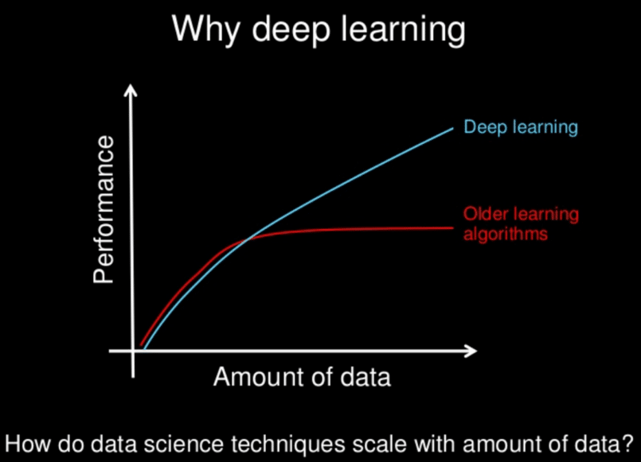
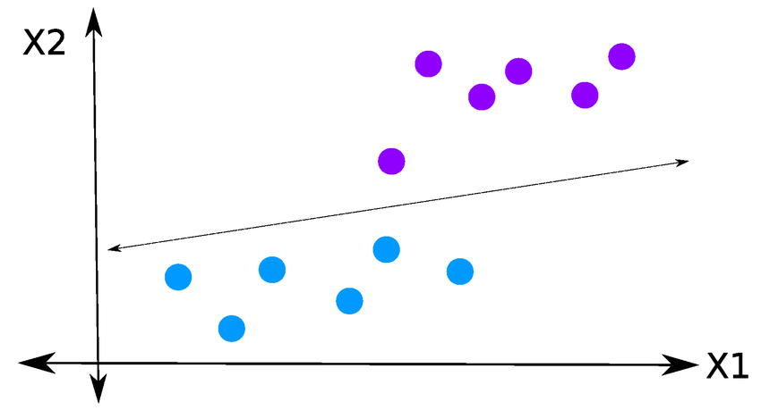
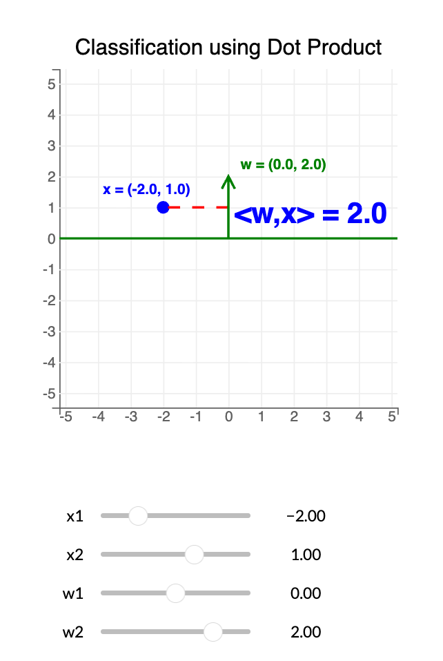
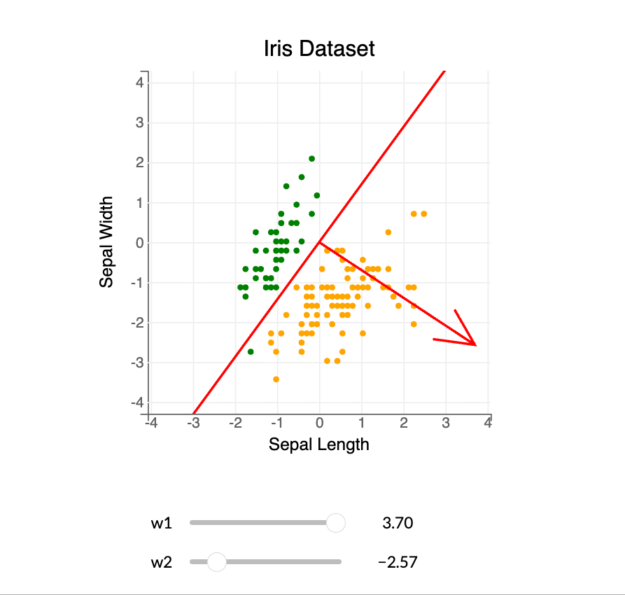
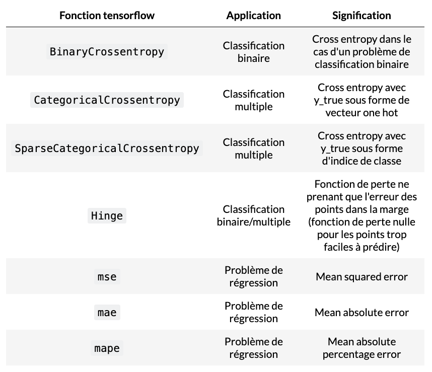
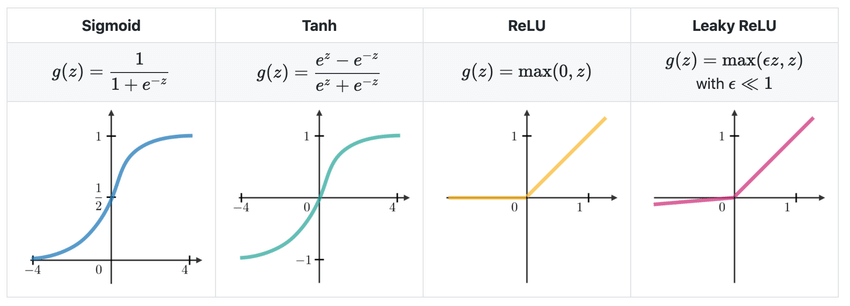
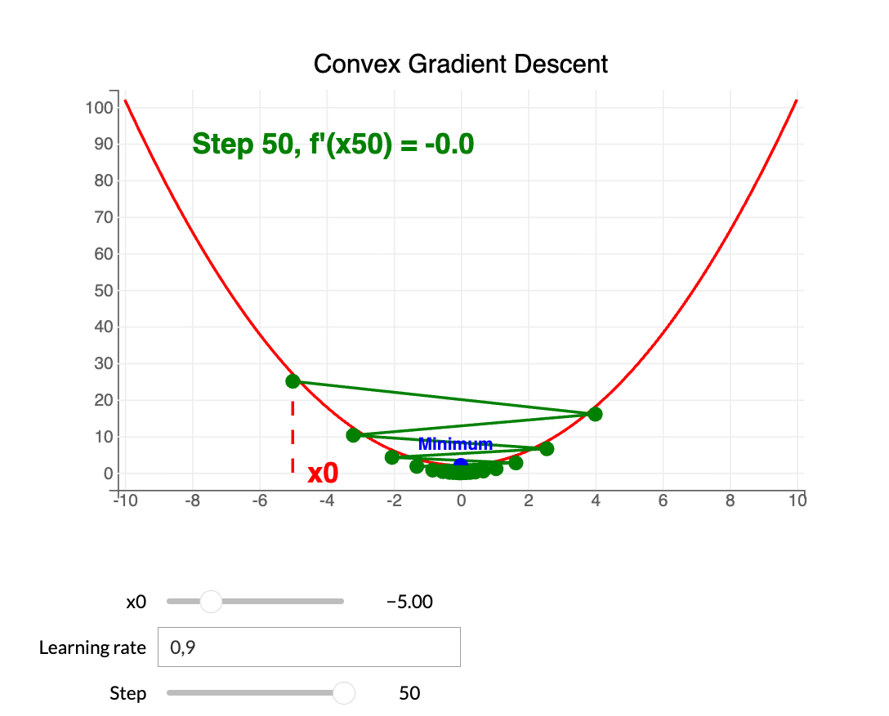

Deep learning is an evolution of traditional Machine Learning. The more high-quality data we have, the better deep learning algorithms will perform. This is not always the case for traditional ML, which can stagnate after a certain level.
Deep learning is based on Artificial Neural Networks (ANN), inspired by how the human brain works.
ML: Linear regression / Decision trees
DL: Artificial Neural Networks (ANN)
ANNs can capture deeper patterns than traditional ML. Deep learning uses multiple layers; the more layers, the deeper the learned representation — hence the name "Deep Learning".
Deep learning typically requires significant compute power.
Neural networks are built from layers. Each layer takes inputs and applies parameters to produce outputs.
A single neuron (perceptron) has: a weight vector $w$, a bias $b$, and an activation function $f$.
Dot product: $$ w^\top x \,=\, \sum_{j=1}^{n} w_j x_j $$
Perceptron output for an input $x$: $$ h \,=\, f(w^\top x + b) $$
The perceptron is a linear model, most effective when data can be linearly separated.
For a point $x = (x_1, x_2)$ and a vector $w = (w_1, w_2)$:
The decision boundary is $w^\top x = 0$, separating positive from negative.
To use dot products for classification, linear separability matters. Example: the Iris dataset using Sepal Width and Sepal Length.
Goal: find a decision boundary to separate species (Green: Iris setosa, Orange: Iris virginica).
Separating hyperplane: $$ \{ x \in \mathbb{R}^2 : \langle x, w \rangle = x_1 w_1 + x_2 w_2 = 0 \} $$
We count classification errors for a given $w$.
Given $n$ points $X = (x_i)_{i=1,\dots,n} \in \mathbb{R}^d$ and labels $Y = (y_i)_{i=1,\dots,n} \in \{0,1\}$.
Classifier: $$ f(x_i, w) = \mathbf{1}[\langle x_i, w \rangle \ge 0] $$
Empirical 0/1 loss: $$ g(w,X,Y) = \sum_{i=1}^{n} \mathbf{1}[ f(x_i, w) \ne y_i ] $$
We minimize this loss to find the best separating hyperplane.
Activation functions enable differentiable loss and appropriate outputs.
Hidden layers: often ReLU / Leaky ReLU.
Output layer depends on task: binary → Sigmoid; multiclass → Softmax; regression → Linear.
With differentiable activations, we can use gradient descent to optimize $w$.
Example: if $f(x)=x^2$, then $f'(x)=2x$.
Learning rate $\\lambda$ controls step size. Iterate until $|f'(x_k)| < {tol}$.
Update rule: $$ x_{k+1} = x_k - \lambda f'(x_k) $$
Limitations: guarantees a global minimum only for convex functions. In DL, loss is non-convex; gradient methods often reach a local minimum.
Therefore, the learning rate is a critical hyperparameter for DL model performance.